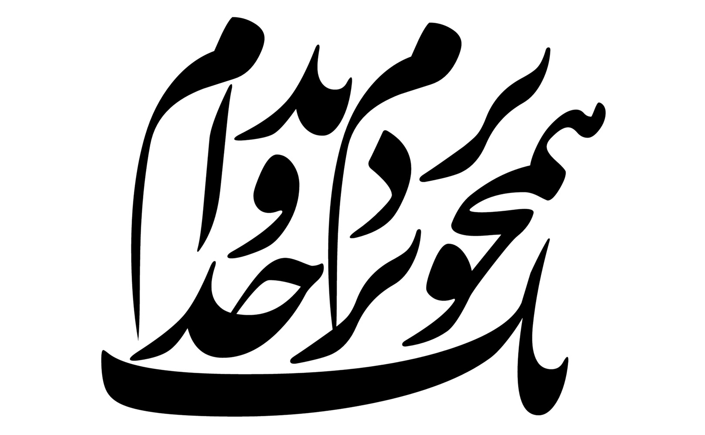
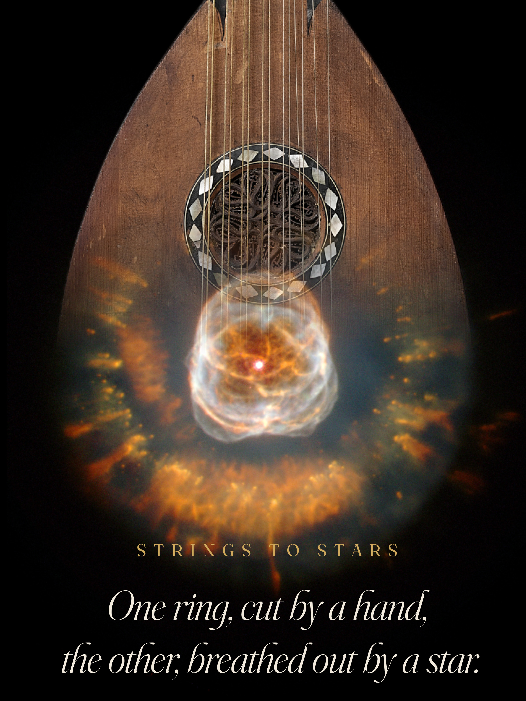

Experimental validation of Helmholtz resonator arrays as zero-energy acoustic treatment for net-zero energy buildings
Next Research (Elsevier) · 2026 · Karbasbaf, M.M., Ezaan, G.
Resonance, traced from the soundhole of a hand-built lute, through the ornamented niches of a Persian palace, to the wave phenomena now under investigation inside a distant nebula, at every scale, read as a single, continuous instrument.

Selected Covers
Book Design
Editorial Redesign
Canonical Texts
Six covers from a self-initiated practice in book design: new treatments for canonical works of Persian epic, Islamic philosophy, and European letters, arranged by the date of the work and spanning nearly a thousand years, from Ferdowsi's Shahnama (c. 1010) to Auerbach's Mimesis (1946). They are studies, not commissions, and are not affiliated with any publisher. Select a cover to open the complete wrap, or the front panel alone.
Self-initiated design studies. The texts and any third-party imagery remain the property of their respective rights holders.
The Scholar
Craft
as Method

Years of hands-on work with musical instruments, investigating, building, and preserving them, led to the creation of the Golden Method, a mathematical approach for optimizing soundhole design. That practical experience revealed the acoustic wisdom already embedded in centuries-old craftsmanship, and became the experiential foundation for everything that followed.
Research later expanded into Persian architectural heritage, where related wave-analysis principles were shown to operate, through different physical mechanisms and at different frequency ranges, within ornamental elements long assumed to be purely decorative. Current work asks whether that same analytical language can be extended toward the electromagnetic and plasma wave phenomena of astrophysical environments.
Read the full narrative →Working Principle
The universe is not a die, but a dulcimer. M. M. Karbasbaf
Selected Record
Next Research (Elsevier) · 2026 · Karbasbaf, M.M., Ezaan, G.
Digital Applications in Archaeology and Cultural Heritage (Elsevier) · 2025 · Karbasbaf, M.M., Ezaan, G.
Applied Acoustics (Elsevier) · 2024 · Karbasbaf, M.M., Ezaan, G.
Arts · 2017 · Jafari, S., Karbasbaf, M.M.
Karbasbaf, M.M.
In Preparation